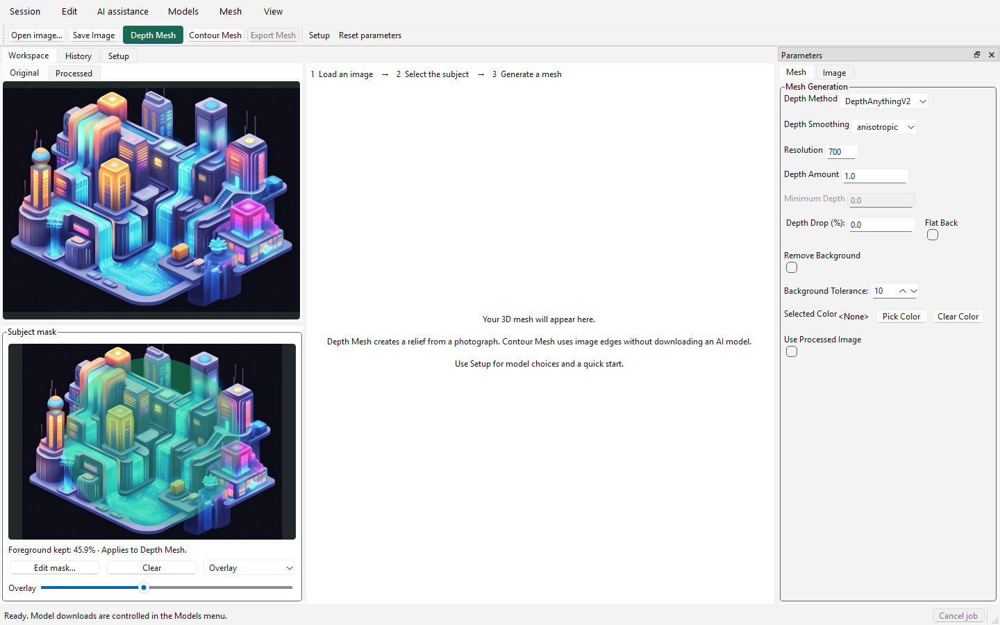
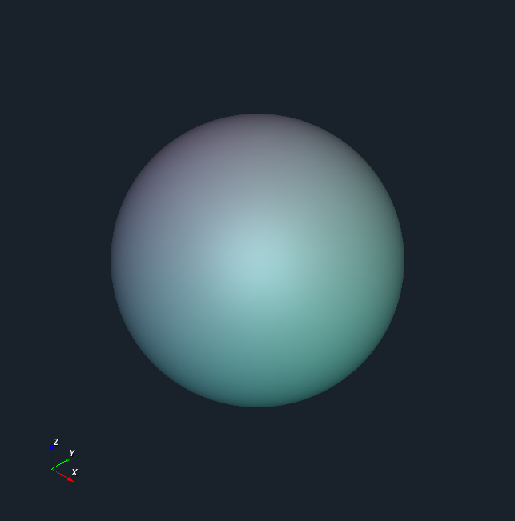
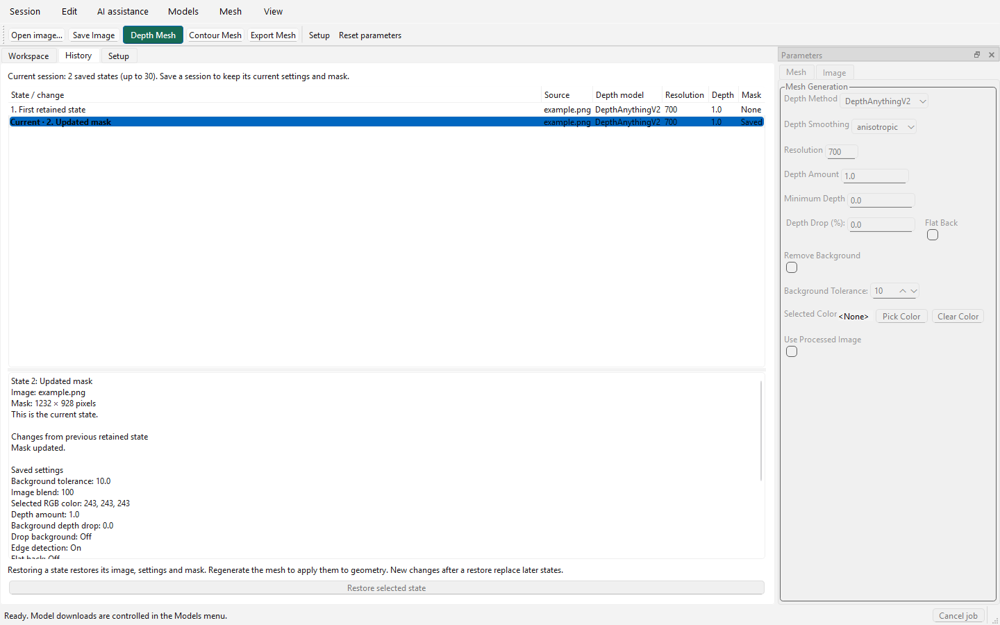

A focused image-to-mesh workspace with a visible mask, integrated 3D inspection, recoverable settings, and a clearer starting point.
This page records the earlier workspace refresh. For the current merged processed-image/mask view, project autosave, keyboard controls and provider connections, use the desktop workflow reference. The captures below show the earlier layout.
Available locally
From a photograph to a relief
Open
Open an image, use the example in Setup, or reopen a saved session.
Select
Edit the subject mask. Add/remove brushes work without model weights; SAM2 accepts clicks and boxes.
Generate
Choose a depth model and generate. Downloads are opt-in. Contour Mesh provides a separate model-free edge route.
Inspect and save
Orbit the embedded mesh, inspect its health, and explicitly export OBJ or STL. Save a session to retain the current settings and mask.
A single-photo depth mesh is a relief. The subject mask applies to Depth Mesh. Contour Mesh uses image edges and has different geometry semantics.
Launch from this existing Windows checkout
Use this command after the current app environment is installed. It opens a new EdgeMesh window; it does not update dependencies.
The accepted mask shares the processed-image view. Inspect the overlay or mask display and open the editor to refine it; there is no separate Processed page. Adjust opacity; undo completed brush strokes; import/export full-size mask PNGs.
Resizable and recoverable
Resize the image/mesh areas and the combined processed-image/mask preview. Move or detach Parameters. View restores hidden panels or resets the layout.
3D inside the app
Orbit, pan, zoom, fit, choose standard views and inspect wireframe or surface edges. Display buffers are separate from export geometry.

Application capture before mesh generation, with an illustrative mask used to exercise the UI. No AI inference was performed.
History with context
Inspect source names, model choices, resolution, depth amount, mask status and changed settings. Restore a selected state explicitly, then regenerate geometry.
Focused Setup
A sample, local model guidance, download control, device status and registration for existing MiDaS/DPT files. No account is required for the basic workflow.
Clear state ownership
Source images remain unchanged. Undo history is bounded and local to the current app session. Saved session files keep the selected state and processing metadata.
See the native 3D render test

Actual native VTK framebuffer capture, shown separately because widget screenshots omit the native child surface. This diagnostic sphere is not a reconstruction of the source image.See History and Setup

Current-session history; the full undo timeline is not persisted across launches.
Direct image-to-3D generation, including plausible unseen surfaces.
Prototype independently of the relief pipeline. Hardware, Windows compatibility and licensing vary substantially.
The model report includes exact capabilities, checkpoint licenses and upstream hardware requirements. No new model weights were downloaded or benchmarked in the workspace implementation.
Build the next layer deliberately
Package preparation soon
Create an installable alpha with a desktop entry point and optional backends. Publish after a clean install, sample workflow, session reopen and export pass.
Optional AI providers
Use Astra with an image-generation tool or a Gemini image model for source creation and editing. Omni offers a separate video path. Preserve inputs and accepted outputs.
Optional agent connection
Codex app-server and Antigravity headless mode provide supported integration routes. Let each runtime own authentication; do not treat runtime login as a transferable media-API key.
For 360° objects, compare two routes
Real overlapping photographs add observations of the object. Generated views or geometry imagine unseen surfaces. Evaluate direct image-to-3D first, then test whether a generated Omni turntable improves geometry and consistency. Preserve that distinction in history and exports.
Other useful directions: stage previews and cache reuse; click-to-highlight mesh defects; linked source/depth/geometry inspection; separate shape and texture jobs; explicit model units; and material-aware GLB export. These are independent feature ideas inspired by documented open-source workflows.
See AI_Product_Direction.md for official API/auth sources, ImageAI reference points, open-source inspirations and packaging gates.